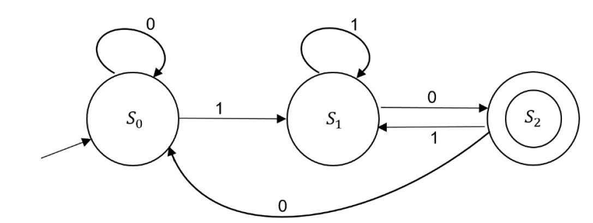

Frank Coelho de Alcantara
O conjunto de itens de uma linguagem regular é um conjunto finito pode ser definido por um alfabeto $\Sigma$
contém as strings $\emptyset$, $\{\varepsilon\}$ e $\{a\}$ para todo e qualquer $a \in \Sigma$. E é fechado em relação as operações de união, concatenação e fechamento de Kleene.Podemos provar, matematicamente que linguagens formais são aquelas que podem ser definidas por máquinas de estado finito, determinísticas ou não, e por expressões regulares.
Também podemos criar uma máquina de estado finito (MEF) equivalente a uma expressão regular (Regex) ou uma expressão regular equivalente a uma máquina de estados finitos. De tal forma que: $MEV \equiv Regex$
Um máquina de estados finitos é uma abstração matemática definida pela 5-tupla, com apenas cinco conceitos:
$\Sigma^*$ é o conjunto de todos os strings, de comprimento maior que $0$ que podem ser criadas a partir de $\Sigma$.
$L(MEF)=\{w|\delta^*(s_0,w)\in A\}$ é o conjunto de todas as strings aceitas por $MEF$.
Camamos o conjunto $L(MEF)$ de Linguagem da $MEF$.
Uma string $w$ será aceita por $MEF$ se, e somente se, depois que $MEF$ terminar o processamento de $w$, $MEF$ esteja em um dos estados de aceitação do conjunto $A$.
Podemos representar uma $MEF$ com três notações diferentes:
$MEF=\{S, \Sigma, \delta, s_0, A\}$
$MEF=\{\{s_0, s_1, s_2\}, \{0,1\}\\ \{\delta_{(s_0,0)}=s_1, \\ \delta_{(s_0,1)}=s_0, \\ \delta_{(s_1,0)}=s_2, \\ \delta_{(s_1,1)}=s_0, \\ \delta_{(s_2,0)}=s_2, \\ \delta_{(s_2,1)}=s_0\}, s_0 = s_0, A=\{s_2\} \}$
| $\delta$ | $0$ | $1$ |
|---|---|---|
| $s_0$ | $s_1$ | $s_0$ |
| $s_1$ | $s_2$ | $s_0$ |
| $s_2$ | $s_2$ | $s_0$ |

Uma máquina de estados muito comum em circuitos, e ambientes, de comunicação de dados uma máquina de detecção de paridade. Este tipo de máquina é capaz de detectar a paridade de um conjunto de bits, fornecidos como entrada de forma sequêncial. Lembre-se nenhum 1 é par e vazio não é. Coisas das regras de paridade.
O Teorema de Kleene afirma que, para que uma linguagem seja considerada formal, ela deve ser definida por: expressões regulares e máquinas de estado finitas.
Isto significa que, com um pouco de álgebra é possível transformar uma em outra.
Algebricamente são uma notação algébrica para representar um detarminada linguagem $L$ dado um alfabeto $\Sigma$.
As Linguagens regulares são fechadas nas operações de união, concatenação e fechamento de Kleene
Dizemos que um determinado conjunto $A$ é fechado em relação a uma operação $OP$. Se, e somente se, quando aplicamos a operação $OP$ sobre qualquer item do conjunto $A$ continua sendo parte do conjunto $A$.
A operação $OP$ altera o iten, como, por exemplo, a multiplicação e conjunto dos inteiros. A multiplicação altera o item, mas, o resultado, ainda faz parte do conjunto dos inteiros.
O conjunto dos inteiros e fechado em relação soma, subtração e multiplicação. Contudo, não é fechado em relação a divisão.
O resultado de algumas divisões executadas entre inteiros, não faz parte do conjunto dos números inteiros.
Dados os conjunto $L_1=\{a,b,c,eg,hf\}$ e $L_2=\{ea,af\}$ definimos a união entre estes conjuntos como:
$L_1 \cup L_2=\{a,b,c,eg,hf,ea,af\}$
Em algumas disciplinas usamos o símblo $+$ para repersentar a união, se for o caso, teremos:
$L_1 + L_2=\{a,b,c,eg,hf,ea,af\}$
Definimos a concatenação entre dois conjuntos $ L_1 \land L_2 $ como:
$ L= L_1 \cdot L_2 = \{ xy | x \in L_1, y \in L_2 \}$
Não é coincidência o uso do símbolo do produto escalar para representar a concatenação.
As casas do Tabuleiro de Xadrez são nomeadas usando o cojunto resultado da operção entre $ L_1 \land L_2 $ desde que:
$ L_1 = \{ a, b, c, d, e, f, g, h \} \land L_2 = \{ 1, 2, 3, 4, 5, 6, 7, 8 \}$
Contudo, as casas já mais são nomeadas usando o conjunto:
$ L_1 = \{ 1, 2, 3, 4, 5, 6, 7, 8 \} \land L_2 = \{ a, b, c, d, e, f, g, h \}$
Você consegue explicar porquê?
Kleene Star, ou Fechamento de Kleene, ou só fechamento (closure) de forma intuitiva, pode ser definida como o conjunto formado pela união de todas as formas possíveis de concatenar qualquer número de cópias das strings na linguagem $L$.
$ L^* = \{ \varepsilon \} \cup L \cup L \cdot L \cup L \cdot L \cdot L \cup . . . \}$
Na prática fica mais claro!
considerando a linguagem $ L=\{ 0,1 \}$
considerando a linguagem $ L_1,L_2 e L_3 $
|
|
Você pode baixar o material de apoio clicando aqui